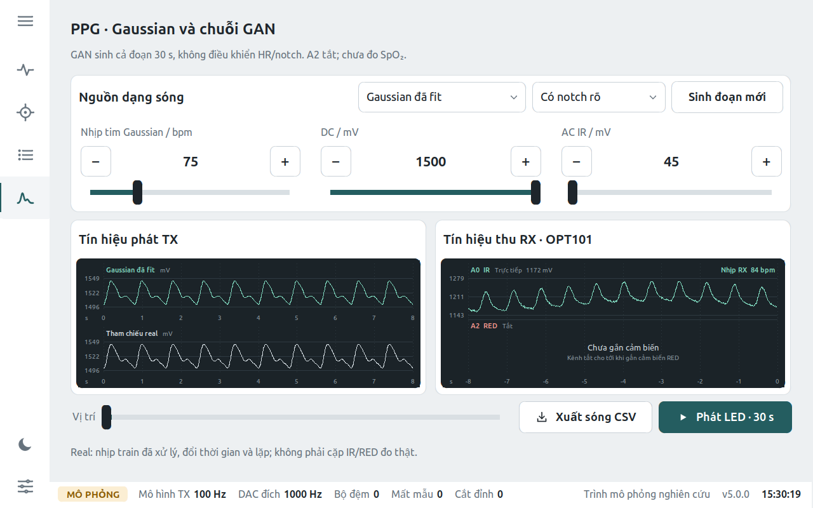

Các mô hình tạo tín hiệu PPG trong hệ thống
Trang này giải thích bằng ngôn ngữ dễ hiểu: hệ thống tạo dạng sóng nhịp tim quang học (PPG) như thế nào, mô hình nào làm việc gì, nhận gì và trả ra gì, học từ dữ liệu nào và đạt được đến đâu. Mọi dạng sóng và con số trên trang được tạo lại từ chính model đang nằm trong app.
1. Hệ thống làm gì
Thiết bị là một bộ mô phỏng: nó tạo ra dạng sóng PPG giả lập, phát qua đèn LED như một ngón tay đang có mạch đập, rồi đo lại bằng cảm biến quang OPT101 để kiểm tra vòng quang học. Phần AI chỉ nằm ở bước tạo dạng sóng; mọi bước còn lại là xử lý tín hiệu và phần cứng có quy tắc rõ ràng.
2. Các mô hình trong hệ thống
Có sáu thành phần “tạo hoặc đọc nhịp”. Ba cái là mạng nơ-ron; ba cái còn lại là công thức hoặc xử lý tín hiệu cổ điển. Đó là chủ ý: chỗ nào quy tắc đủ tốt thì không dùng AI.
| Thành phần | Loại | Nhận vào | Trả ra | Học từ | Điều khiển |
|---|---|---|---|---|---|
| Classic models/ppg_model.py | công thức | HR, PI, SpO₂, nhịp thở, nhiễu, điều kiện sinh lý | 2 kênh IR/RED, 100 Hz, liên tục | Không học; tham số từ tài liệu | Đầy đủ (HR, hô hấp, SpO₂ theo công thức tỉ số R) |
| Gaussian đã fit models/waveform.py | công thức | HR, kiểu “có/không notch” | Một xung lặp lại, 100 Hz | Fit 25 684 xung của 32 người BIDMC | HR; hình dáng cố định |
| LSM-GAN v2 lsm_generator.ts | AI · GAN | 1 200 số ngẫu nhiên | 30 s, 40 Hz (1 200 mẫu, 0–1) | BIDMC: 32 người ICU | Không (chỉ đổi “seed”) |
| PhysioMix đang dùng physiomix_generator.ts | AI · GAN có điều kiện | 1 200 số ngẫu nhiên + điều kiện (tập dữ liệu, HR, độ bất thường, độ lớn) | 30 s, 40 Hz (1 200 mẫu, 0–1) | 6 tập, … người train | HR 40–180, độ bất thường, tập dữ liệu/trạng thái |
| PhysioFlow mới physioflow_generator.ts | AI · flow matching có điều kiện | 1 200 số ngẫu nhiên + cùng điều kiện như PhysioMix | 30 s, 40 Hz (1 200 mẫu, 0–1) | 6 tập, cùng người train như PhysioMix | HR 40–180 (khung nhịp dựng sẵn), độ bất thường, tập dữ liệu/trạng thái |
| Nhịp RX core/rx_heart_rate.py | xử lý tín hiệu | Mẫu ADC thật từ OPT101 | Nhịp (bpm) hoặc lý do không đo được | Không học | — |
Còn có cWGAN-GP và TCN-FiLM từ các vòng nghiên cứu trước; chúng được giữ để đối chiếu, không chọn được trong app.
Cùng 75 bpm, các nguồn trông thế nào
Mỗi đường đã chuẩn hoá về 0–1 và lấy 10 s đầu. “Thật” là một cửa sổ BIDMC đã lọc từ tập train.
3. PhysioMix hoạt động ra sao
Ý tưởng chính: không để mạng nơ-ron tự quyết nhịp tim. Thời điểm từng nhịp được dựng sẵn bằng công thức từ HR và độ bất thường bạn yêu cầu; mạng chỉ học hình dáng của từng nhịp cho giống người thật trong tập dữ liệu đã chọn. Nhờ vậy yêu cầu 72 bpm thì ra đúng khoảng 72 bpm, còn dáng sóng thì học từ dữ liệu.
Vì sao thiết kế như vậy
- Nhịp dựng sẵn: GAN thuần thường “trôi” nhịp; ở bản v2, yêu cầu 150 bpm đo ra 128–136. Dựng sẵn nhịp làm HR luôn đúng theo lệnh.
- Neo biên độ hài: các hài chỉ quyết định dáng (tổng = 1), nên mạng không thể thu nhỏ nhịp tới mức phần dư lấn át.
- Tâm thu cố định: khi nhịp dài/ngắn hơn, chỉ pha tâm trương co giãn — đúng như tim thật; độ bất thường đo lại khớp lệnh (σ=0,2 → 0,19).
- FiLM theo điều kiện: một mạng chung nhưng mỗi tập dữ liệu (ICU, khỏe mạnh, cổ tay…) có “phong cách” riêng.
Con số của bản trong app
4. PhysioFlow: mô hình mới (flow matching)
PhysioMix là GAN: dù điều khiển nhịp tốt, một CNN chuyên tách thật/giả vẫn nhận ra mẫu sinh qua đạo hàm dạng sóng (kết cấu “gợn”), và GAN cần nhiều vòng chỉnh để train ổn định. Các nghiên cứu gần đây về tín hiệu sinh lý chuyển sang họ diffusion / flow matching (ví dụ FlowECG cho ECG, VAMP-Diff cho PPG): mô hình học cách biến nhiễu thành tín hiệu từng bước, không cần mạng đối kháng. PhysioFlow dùng ý tưởng đó nhưng giữ điểm mạnh của PhysioMix: nhịp vẫn được dựng sẵn từ HR bạn chọn.
Học như thế nào
Vì sao thiết kế như vậy
- Không có mạng đối kháng: chỉ một loss hồi quy, train ổn định; không cần chỉnh R1, ngưỡng cắt gradient như 9 vòng PhysioMix.
- Khung nhịp dựng sẵn: mô hình khuếch tán thuần trước đây (v2) điều khiển HR sai 4,3 bpm; khung nhịp giữ HR đúng, kể cả ngoài vùng dữ liệu train.
- Khung theo cờ “đã biết HR”: 87% cửa sổ cổ tay thật không đo được nhịp (chuyển động lấn át); khi train chúng không có khung, nên lúc sinh cũng chỉ thêm khung khi HR được chỉ định.
- Loss đạo hàm: CNN tách thật/giả nhìn vào đạo hàm; loss này phạt sai kết cấu nhỏ mà loss thường bỏ qua.
- Chọn thời điểm t đều khi train: kiểu logit-normal phổ biến gần như không train vùng t < 0,05, nơi các bước cuối tạo chi tiết mịn; chọn t đều đưa S_arm từ 0,537 xuống 0,470 (vòng 3).
- Không lọc ở đầu ra: lọc FFT vòng, hay lọc trên cửa sổ đệm phản xạ, đều để lại dấu vết ở mép cửa sổ mà CNN bắt được (vòng 5 PhysioMix; vòng 3 PhysioFlow: AUC 0,99).
Con số
Vòng lặp kỹ thuật: giả thuyết → train → đo → sửa
Mỗi vòng train trên Kaggle (2 × T4), chấm trên người validation bằng cùng thước đo với PhysioMix (S_arm, thấp = tốt). Quy tắc thay model trong app được ghi lại trước vòng cuối.
| Vòng | Thay đổi / giả thuyết | S_arm tốt nhất | S_real | AUC đạo hàm | Q cổ tay | Kết luận |
|---|
5. Đầu vào · đầu ra
- Tập dữ liệu / trạng thái: GXU ngón tay (khỏe), PERform Large (ICU), BIDMC (ICU), PERform AF, PERform không AF, Cổ tay khi vận động.
- Nhịp tim mục tiêu: 40–180 bpm (dữ liệu train chủ yếu 40–135; ngoài đó là ngoại suy, app có ghi chú).
- Độ bất thường nhịp: hệ số biến thiên khoảng nhịp 0–0,35; mặc định theo tập (AF ≈ 0,22).
- Seed: chọn nhiễu z; mỗi seed cho một đoạn khác.
- DC và AC (mV) chỉ dùng sau model để đổi ra điện áp DAC.
- 1 200 số trong 0–1 = 30 giây ở 40 Hz, dạng sóng PPG đã lọc 0,5–8 Hz.
- App nội suy lên 100 Hz rồi DAC 1 kHz (Pi: 500 Hz), cộng DC/AC thành mV cho LED IR (RED tắt cho tới khi gắn cảm biến).
- Kèm “nhịp đo lại” trên chính dạng sóng để bạn thấy model có làm đúng lệnh.
- Không có: SpO₂ đã hiệu chuẩn, cặp IR/RED thật, chẩn đoán.
Thử: chọn tập dữ liệu và nhịp tim
Yêu cầu so với đo lại (trung vị 5 seed)
6. Dữ liệu huấn luyện
Sáu tập PPG công khai, cùng một cách xử lý: lọc 0,5–8 Hz, chia cửa sổ 30 s ở 40 Hz, chuẩn hoá 0–1. Mỗi người chỉ nằm trong một phần (train / validation / test), để model được chấm trên người nó chưa từng thấy.
| Tập | Mô tả | Người train | Người val | Người test | Cửa sổ 30 s | Nguồn · giấy phép |
|---|
Dữ liệu thật trông thế nào (10 s đầu, 3 người khác nhau)
7. Huấn luyện và chọn model
PhysioMix là một GAN: hai mạng chơi đối kháng. Generator (phần ở mục 3) tạo dạng sóng; critic nhìn đạo hàm dạng sóng cùng điều kiện và chấm “giống thật” hay “giả”. Generator học để qua mặt critic, critic học để không bị lừa.
Cách chọn model (quy tắc ghi trước khi train)
- Mỗi 500 bước, chấm trên người validation: độ giống phân bố của 5 nhóm dữ liệu + độ chính xác điều khiển HR.
- Giữ checkpoint tốt nhất mỗi seed; chấm lại bằng seed mới, cộng điểm “bị CNN nhận ra là giả” → S_arm (thấp = tốt).
- Qua mọi cổng an toàn: không NaN, không phẳng, đa dạng đủ, gradient ổn, xuất TorchScript khớp, < 50 ms trên 1 luồng CPU.
- Chỉ thay model trong app khi trung bình 3 seed tốt hơn hẳn (vượt độ lệch chuẩn giữa các seed). Tập test không dùng để chọn.
S_arm qua các vòng (thấp = tốt)
Điểm validation theo bước train (bản trong app, 3 seed)
Điểm thấp nhất thường ở bước 3 500–7 000; train thêm không giúp (round 4 đã thử gấp đôi số bước với learning rate thấp hơn). Vì vậy app luôn lấy checkpoint tốt nhất theo validation, không lấy bước cuối.
8. Giống người thật đến đâu, trên từng tập
Chấm trên người chưa từng dùng để train. Mỗi chỉ số đặt cạnh “dữ liệu thật của người khác” — mức trần thực tế, vì người này cũng khác người kia.
Model có chép lại dữ liệu train không?
Với mỗi cửa sổ, tìm cửa sổ train cùng tập giống nó nhất (tương quan Pearson, thử mọi độ dịch). Mô hình chép dữ liệu sẽ cho giá trị ≈ 1. Mốc so sánh là người thật chưa dùng để train: tín hiệu tuần hoàn nên người khác nhau vẫn khá giống nhau.
9. Bài thi mới GalaxyPPG và các bước A–E
Các điểm ở mục 8 chấm trên người chưa dùng của chính các bộ đã train; phần cổ tay ở đó chỉ có 83 cửa sổ tập thể dục từ một loại thiết bị. Để biết model có giống thật trên cổ tay đời thường không, dự án dùng một bộ mà chưa model nào từng thấy, rồi lần lượt thử các cách cải thiện. Luật quyết định của mỗi bước được khoá trong code trước khi train hoặc chấm; không đổi luật sau khi đã thấy điểm.
Dữ liệu và cách chia người
- GalaxyPPG (Zenodo 14635823, CC BY 4.0): 24 người, BVP Empatica E4 64 Hz ở cổ tay, khi nghỉ / làm việc trí óc / đi bộ / chạy. Nhịp tham chiếu từ đai ngực Polar H10.
- Cắt như mọi dữ liệu khác: lọc 0,5–8 Hz, 40 Hz, cửa sổ 30 s, chuẩn hoá.
- Từ bước B: 12 người thi cố định (P01, P03, P06, P07, P09, P10, P13, P16, P18, P19, P23, P24) chỉ để báo cáo; 12 người còn lại chia giữa train và validation tuỳ bước.
- Model được nhắc bằng nhịp Polar của người “bên kia”; chấm nhiều lần chia đôi người rồi lấy trung bình ± SD.
Ba chỉ số dùng trong luật
- Khó phân biệt = 100·(1 − |2·AUC − 1|) của C2ST: CNN đạo hàm (3 lớp tích chập 16/32/32 kênh, 11 201 tham số) chia fold theo người. 100% = đoán mò.
- Q (thấp = tốt) = MMD tổng + 0,5·(1 − độ phủ) + 0,25·(1 − độ giống): sai lệch phân bố hình dạng so với người thật.
- Sai nhịp = trung vị |nhịp đo trên sóng sinh − nhịp được nhắc| (nhịp/phút).
- Bài kiểm tra cũ: validation của mục 7–8; từ bước B, model mới phải giữ S_arm ≤ 0,559 và Q cổ tay khi tập ≤ 0,587 (mức vòng 9 cộng dao động 3 seed).
Bước A · chấm lại các model trong app (chưa dùng để chọn)
| Nguồn (24 người, 3 lần chia) | Khó phân biệt | Q | Sai nhịp (bpm) | Trong 5 bpm |
|---|---|---|---|---|
| Người thật khác (mức trần) | 89 ± 10% | 0,08 | 1,2 | 72% |
| PhysioMix vòng 9 (app) | 0,7 ± 1,0% | 0,84 | 1,5 | 61% |
| PhysioFlow (app, chế độ nghiên cứu) | 0,6 ± 0,4% | 1,33 | 1,7 | 70% |
| LSM-GAN | 0% | 2,13 | 14,4 | 15% |
| Bộ tạo Gaussian (luật, không AI) | 0% | 2,53 | 0,0 | 100% |
Cả ba model AI bị nhận ra gần như hoàn toàn trên cổ tay đời thường; điểm cổ tay cũ không chuyển sang được. Theo luật bước A, PhysioMix ở lại app. Bộ Gaussian bám nhịp tuyệt đối vì nó dựng nhịp bằng công thức, nhưng hình dạng sai nhất. Sai nhịp theo nhóm (lần chia 0; nghỉ · trí óc · đi bộ · chạy): PhysioMix 0,9 · 3,4 · 7,2 · 14,1; PhysioFlow 1,3 · 2,9 · 8,9 · 5,8 bpm. Nguồn: ml/runs/fresh-galaxy-result-v1/fresh_galaxy.json.
Bước B · thêm 12 người GalaxyPPG vào dữ liệu train (1 seed)
Cửa sổ cổ tay để train tăng từ 83 lên 1 293; train lại đúng công thức PhysioMix vòng 9 (physiomix_g) và PhysioFlow F10 (physioflow_g), seed 42. Luật: vào vòng 3 seed nếu trên 12 người thi hơn app quá 2 × SD, Q thấp hơn, sai nhịp không tệ hơn quá 2 bpm, và không lùi ở bài kiểm tra cũ.
| Nguồn (12 người thi) | Khó phân biệt | Q | Sai nhịp (bpm) | Bài cũ: S_arm · Q cổ tay | Luật |
|---|---|---|---|---|---|
| Người thật khác | 71 ± 23% | 0,09 | 1,2 | ||
| PhysioMix app | 0,7 ± 1,1% | 0,85 | 1,5 | 0,530 · 0,527 | mốc |
| physiomix_g | 3,3 ± 2,0% | 0,28 | 1,3 | 0,465 · 0,794 | ✗ hơn 2,6 / cần 4,0; lùi bài cũ |
| physioflow_g | 31,8 ± 3,6% | 0,19 | 1,2 | 0,491 · 0,950 | ✗ hơn 31,1 / cần 7,1 nhưng lùi bài cũ |
Thêm dữ liệu cổ tay giúp rất nhiều trên người mới (lần chia 0, đi bộ / chạy: PhysioMix app sai 9,6 / 12,1 bpm, physioflow_g 1,5 / 1,9 bpm), nhưng cả hai model lùi ở phần cổ tay khi tập của bài cũ (Q 0,794 và 0,950 > 0,587), nên không vào vòng 3 seed. Suy luận, chưa kiểm chứng: hai loại cổ tay dùng chung một nhãn, 1 210/1 293 cửa sổ là E4 đời thường. Nguồn: docs/physioflow/loop/galaxy_b_pilot.json, luật docs/physioflow/rules/FROZEN_GALAXY_B.json.
Bước B-LSM · LSM-GAN học trên nhiều bộ dữ liệu (chỉ báo cáo)
| LSM-GAN học gì (12 người thi) | Cửa sổ train | Khó phân biệt | Q | Sai nhịp (bpm) |
|---|---|---|---|---|
| Chỉ BIDMC (bản trong app) | 619 | 0,0% | 1,99 | 16,7 |
| Mọi bộ, chưa có GalaxyPPG | 6 073 | 0,2 ± 0,1% | 0,83 | 15,0 |
| Mọi bộ + GalaxyPPG | 7 283 | 1,5 ± 1,0% | 0,95 | 13,4 |
| Chỉ cổ tay + GalaxyPPG | 1 293 | 7,6 ± 4,5% | 0,76 | 10,6 |
Cùng công thức LSM-GAN của app, 6 000 bước, seed 42. Hình dạng trung bình gần thật hơn rõ (Q 1,99 → 0,76–0,95), nhưng mọi mức hơn đều nằm trong 2 × SD (bản chỉ cổ tay hơn 7,5, cần 9,1), nên theo luật “thêm dữ liệu chưa giúp”. LSM-GAN không có đầu vào điều kiện nên không bám nhịp và không thể vào app. Nguồn: docs/physioflow/loop/lsm_galaxy.json.
Bước C · giám khảo độc lập (chỉ báo cáo)
Câu hỏi: CNN của dự án có thật sự hiểu PPG không? Cùng các cửa sổ được chấm thêm bằng PaPaGei-S (Nokia Bell Labs, ICLR 2025; ResNet1D-MoE 18 khối, 5,8 triệu tham số, học trên hơn 57 000 giờ PPG; đông cứng, chỉ đọc embedding 512 chiều), bằng 7 chỉ số sinh lý viết riêng, và bằng CNN trên từng dải tần.
| Nguồn (12 người thi, 3 lần chia) | CNN dự án | PaPaGei | Độ giống giữa nhịp (× thật–thật) |
|---|---|---|---|
| Người thật khác | 75 ± 23% | 91 ± 6% | 1,0 |
| PhysioMix app | 1,1 ± 1,4% | 9,7 ± 1,1% | 8,2 |
| PhysioFlow app | 4,5 ± 2,2% | 2,9 ± 1,1% | 8,9 |
| physiomix_g (bước B) | 6,2 ± 3,1% | 25,6 ± 4,2% | 2,4 |
| physioflow_g (bước B) | 35,0 ± 7,2% | 66,9 ± 6,0% | 1,5 |
| LSM-GAN · Gaussian | 0,1% · 0% | 0,1% · 0% | 5,4 · 6,1 |
Hai giám khảo xếp hạng gần như nhau (Spearman 0,88 trên 22 cặp nguồn × tập), nên CNN của dự án không chấm tuỳ tiện. Theo dải tần, PhysioMix app trên GalaxyPPG đạt 56 / 80 / 52 / 1% ở 0,5–1,5 / 1,5–3 / 3–5 / 5–8 Hz (người thật khác 76 / 82 / 75 / 89%): nó lộ chủ yếu ở kết cấu nhỏ 5–8 Hz, không phải ở nhịp chính. Hạn chế: PaPaGei học chủ yếu PPG bệnh viện và giấc ngủ, ít cổ tay. Nguồn: docs/physioflow/loop/judges_c.json.
Bước D · tách “cổ tay đời thường” thành miền riêng (1 seed)
GalaxyPPG thành miền wrist_daily, miền wrist (tập thể dục, 83 cửa sổ) giữ nguyên. 8 người GalaxyPPG train (813 cửa sổ), 4 người validation (P08, P11, P14, P20), 12 người thi như cũ. Luật chỉ dùng validation: không lùi bài cũ, và trên 4 người validation hơn app quá 2 × SD, Q thấp hơn, sai nhịp không tệ hơn quá 2 bpm.
| PhysioMix app | physiomix_d | physioflow_d | |
|---|---|---|---|
| Bài cũ: S_arm (≤ 0,559) · Q cổ tay tập (≤ 0,587) | 0,530 · 0,527 | 0,502 · 0,558 ✓ | 0,439 · 0,574 ✓ |
| 4 người validation: khó phân biệt | 0,4 ± 0,2% | 7,2 ± 5,7% | 29,2 ± 16,4% |
| … hơn app / cần hơn (2 × SD) | 6,7 / 11,4 ✗ | 28,8 / 32,8 ✗ | |
| … Q · sai nhịp (bpm) | 1,05 · 0,87 | 0,79 · 0,87 ✓ | 0,55 · 0,78 ✓ |
| 12 người thi (chỉ báo cáo): khó phân biệt | 0,7 ± 1,1% | 2,8 ± 3,0% | 24,3 ± 3,6% |
| 12 người thi: Q · sai nhịp (bpm) | 0,85 · 1,5 | 0,49 · 1,4 | 0,23 · 1,2 |
Tách miền sửa đúng lỗi bước B: cả hai model không còn lùi ở cổ tay khi tập. physioflow_d chỉ trượt điều kiện độ khó phân biệt, vì với 4 người validation (2 người mỗi bên) điểm dao động ± 16 giữa các lần chia. Không chạy vòng 3 seed; app giữ PhysioMix vòng 9. Nguồn: docs/physioflow/loop/galaxy_d_pilot.json, luật docs/physioflow/rules/FROZEN_D_PILOT.json.
Bước E · xác nhận PhysioFlow bước D với 6 người validation, 3 seed
Luật mới khoá trước khi train (commit 0e07810a): 6 người validation đời thường (P04, P08, P15, P20, P21, P22; 619 cửa sổ), 6 người train (591 cửa sổ), 12 người thi như cũ, chấm 5 lần chia. Train công thức physioflow_d ở seed 42, 123, 2026 (Kaggle 2 × T4, 6,6 giờ). Ngưỡng = 2 × max(SD giữa seed, SD giữa các lần chia, SD lần chia của app).
| PhysioMix app | physioflow_e (seed 42 / 123 / 2026) | |
|---|---|---|
| Bài cũ: S_arm trung bình (≤ 0,559) | 0,530 | 0,440 ✓ (0,425 / 0,448 / 0,446) |
| Bài cũ: Q cổ tay tập trung bình (≤ 0,587) | 0,527 | 0,585 ✓ (0,503 / 0,684 / 0,570) |
| 6 người validation: khó phân biệt | 0,05 ± 0,07% | 25,6% (24,3 / 26,7 / 25,9) |
| … hơn app / cần hơn | 25,6 / 32,5 ✗ (SD seed 1,2; SD lần chia 16,3) | |
| … Q · sai nhịp (bpm) | 0,89 · 1,16 | 0,37 · 0,99 ✓ |
| 12 người thi (chỉ báo cáo): khó phân biệt | 0,4 ± 0,9% | 33,0% (31,9 / 34,4 / 32,8) |
| 12 người thi: Q · sai nhịp (bpm) | 0,88 · 1,50 | 0,21 · 1,24 |
Người thật khác (mức trần): 75,7 ± 32,2% trên validation, 69,9 ± 20,6% trên 12 người thi. Quyết định theo luật: không thay model, app giữ PhysioMix vòng 9, assets/neural không đổi. Ba seed rất giống nhau, nhưng điểm vẫn dao động mạnh giữa các cách chia 6 người (cả 5 lần chia đều dương, 6–43 điểm), nên ngưỡng 32,5 cao hơn mức hơn 25,6. Q cổ tay tập trung bình 0,585 sát giới hạn 0,587; riêng seed 123 là 0,684. Nguồn: docs/physioflow/loop/galaxy_e.json, luật docs/physioflow/rules/FROZEN_E.json.
data.js.10. Vận động hay nghỉ? Model có sinh ngẫu nhiên không?
Kiểm chứng bằng một CNN chỉ học trên dữ liệu thật để gọi tên 7 trạng thái (đoán mò = 14%). Nếu model làm theo lệnh, CNN sẽ gọi đúng tên trạng thái của mẫu sinh.
Mỗi ô: % mẫu được CNN gọi đúng trạng thái · xác suất CNN cho là “cổ tay vận động”. Ví dụ ở dòng “Cổ tay vận động”: dữ liệu thật của người chưa dùng được nhận đúng 86%, PhysioMix 77%, PhysioFlow 94%; ở các trạng thái nghỉ, xác suất bị nhận là vận động đều ≤ 6%. Trung bình của PhysioFlow (68%) cao hơn cả dữ liệu thật: mẫu của nó “đúng kiểu” trạng thái hơn người thật, tức đa dạng ít hơn.
Phép thử “cùng nhiễu, đổi lệnh”
Giới hạn
- Không có núm “mức vận động” riêng: vận động gắn với tập cổ tay, nên khác biệt còn gồm vị trí cảm biến.
- PPG cổ tay thật tuần hoàn theo bước chân/đạp xe. Vòng 9 thêm bộ dao động chuyển động và loss khớp phổ theo từng tập; độ phủ cổ tay tăng, nhưng biên độ dao động học được vẫn nhỏ (~3% xung) — phổ cổ tay vẫn trải rộng hơn thật.
- “Sau gắng sức” của GXU là ngồi nghỉ sau tập, không phải đang chuyển động.
11. Nhịp tim tính từ tín hiệu OPT101 thu được
Biểu đồ “Tín hiệu thu RX · OPT101” hiển thị Nhịp RX tính trực tiếp từ mẫu ADC thật — để kiểm tra vòng LED → cảm biến có truyền đúng nhịp đã phát hay không. Đây là xử lý tín hiệu có quy tắc, không phải AI, và không phải nhịp tim lâm sàng.
- Lấy đoạn liên tục mới nhất (ít nhất 5 s; mất mẫu > 0,1 s thì cắt đoạn), từ 8 s đang hiển thị.
- Từ chối nếu > 2% mẫu chạm trần ADC, hoặc biên độ sau lọc < 6 mã ADC (~5 mV).
- Nội suy về lưới đều 50 Hz, lọc thông dải bằng trung bình trượt (bỏ trôi nền và DC của LED, giảm nhiễu).
- Tìm chu kỳ bằng tự tương quan; chu kỳ phải lặp lại ở gấp đôi độ trễ và khớp (±15%) với số xung đếm được.
- Không đạt thì hiện lý do (“cần ≥ 5 s liên tục”, “tín hiệu yếu”, “chạm trần ADC”, “không rõ nhịp đều”) thay vì đoán. Chế độ mô phỏng (dry-run) không hiện số.
Độ đúng trên tín hiệu RX tổng hợp
Khi nào không báo số
Đo trên luồng RX tổng hợp có trôi nền, nhiễu ADC, lệch thời gian và lượng tử hoá. Chưa đo với Pi, DAC, LED và OPT101 thật.

12. Giới hạn · thuật ngữ
- PPG
- Quang thể tích đồ: ánh sáng qua mô thay đổi theo lượng máu mỗi nhịp tim.
- GAN
- Hai mạng đối kháng: một mạng tạo, một mạng chấm thật/giả; mạng tạo giỏi dần để qua mặt mạng chấm.
- Critic
- Mạng chấm của GAN; ở đây nhìn đạo hàm dạng sóng cùng điều kiện.
- Điều kiện
- Thông tin đưa vào cùng nhiễu để điều khiển đầu ra: tập dữ liệu, HR, độ bất thường, độ lớn.
- FiLM
- Cách điều kiện “vặn” từng tầng của mạng bằng phép nhân và cộng.
- Hài
- Các sóng sin bội của tần số nhịp; tổng 6 hài tạo nên dáng một nhịp.
- Độ bất thường nhịp
- Hệ số biến thiên khoảng giữa các nhịp; AF có giá trị lớn.
- Validation / test
- Người không dùng để train; validation để chọn model, test chỉ để báo cáo.
- C2ST
- Phép thử hai mẫu: train một bộ phân loại tách thật/giả; AUC 0,5 = không tách được.
- Flow matching
- Học một “trường vận tốc” đưa nhiễu ngẫu nhiên dần thành tín hiệu thật; sinh mẫu bằng cách đi theo trường đó vài bước. Cùng họ với mô hình khuếch tán (diffusion).
- U-Net
- Mạng tích chập thu nhỏ tín hiệu qua nhiều tầng rồi phóng to lại, có đường tắt giữa các tầng cùng độ phân giải: thấy được cả chi tiết nhỏ lẫn nhịp dài.
- Bước Heun
- Một bước tích phân hai lần đánh giá (dự đoán rồi hiệu chỉnh); chính xác hơn bước Euler với cùng số bước.
- Khung nhịp
- Pha của từng nhịp tim (sin, cos) dựng từ HR và độ bất thường, đưa vào U-Net để mạng đặt đỉnh tâm thu đúng chỗ.
- TorchScript
- Định dạng model PyTorch chạy được trên CPU mà không cần mã Python của model.